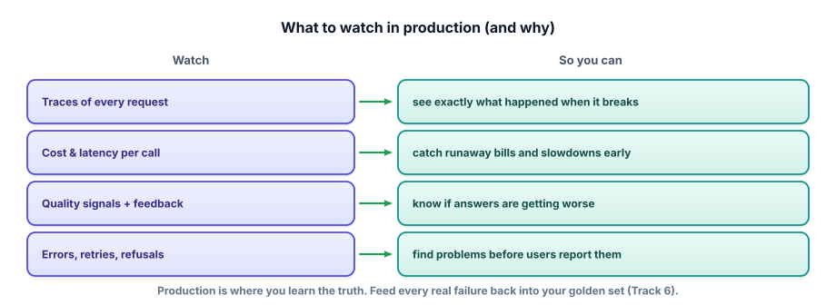

Monitoring in production
Your evals test what you thought of. Real users do what you didn’t. Monitoring is how you see the truth of your system in the wild — and turn its failures into the next round of improvements.
A doctor does not wait for you to collapse; she checks your pulse, temperature and blood pressure on every visit, and keeps your file so she can see what changed. Monitoring is that file for your AI service: every request leaves a record (a trace), the numbers are charted over time, and an alarm rings when one goes out of range. Where it breaks: a thermometer reads the same for everyone, but an LLM can sound perfectly healthy while giving wrong answers, so you also need checks of quality, not just of speed and errors.
Why monitoring is non-negotiable
A golden set can only contain cases you imagined. Production is full of cases you didn’t: phrasings you never anticipated, edge inputs, and slow drift as the world changes and your data grows stale. On top of that, cost and latency behave differently under real traffic than on your laptop. So you instrument the running service to answer three questions continuously: What is it actually doing? Is it healthy (fast, affordable, not erroring)? Is it any good? Without monitoring, you’re flying blind — you only learn something is wrong when a user complains, which is the most expensive way to find out.

What to watch
Four things are worth watching, and each answers a different question.
- Traces — the full record of each request: the prompt, retrieved context, tool calls, the model output, tokens, and timing. This is Track 6’s observability at production scale, and it’s what lets you debug a specific bad answer by seeing exactly what happened — was the retrieval wrong, or the generation?
- Cost & latency per request — so a prompt that ballooned or a slow model shows up as a metric, not a surprise invoice.
- Quality signals — thumbs up/down, whether the user re-asked or abandoned, and periodic online evals (an LLM judge scoring a sample of live traffic) to catch quality drift the golden set missed.
- Errors, retries, refusals — spikes here are your earliest warning that something broke upstream.
Free and open tools exist for all of this — for example, an open-source tracing/eval platform like Langfuse, or simply structured logging plus OpenTelemetry — but the concept matters more than the vendor: capture every request as a trace, roll traces up into metrics and dashboards, and alert on the ones that matter.
The loop that makes it worth it
Monitoring isn’t just dashboards to stare at — it’s the input to a loop. When you spot a class of failure in production (a question type that gets bad answers, an injection that slipped past), you do two things: fix it, and add it to your golden set so the eval gate (last lesson) prevents it forever.
Real user thumbs-downs become new test cases; live traffic becomes the source of your next eval improvements. This is the flywheel from Track 6 and Track 11, now closed end to end: monitor → find failures → fix + add to golden set → the gate blocks that failure forever → monitor again.
A system wired this way gets more reliable the longer it runs.
Watch an incident hide inside the average
Slowly raise the share of requests hitting a slow path. Keep your eye on the mean while p95 takes off — this is why nobody alerts on averages.
Facts: OpenTelemetry's GenAI semantic conventions are marked Development and now live in a dedicated repo (opentelemetry.io GenAI page, inference spans). An inference span is named {gen_ai.operation.name} {gen_ai.request.model} (e.g. chat claude-sonnet-5-5), with span kind CLIENT. Traffic and sizes below are our assumptions.
- What each span carries. Required:
gen_ai.operation.name,gen_ai.provider.name. Thengen_ai.request.model,gen_ai.response.model,gen_ai.usage.input_tokens,gen_ai.usage.output_tokens,gen_ai.usage.cache_read.input_tokens,gen_ai.response.finish_reasons,gen_ai.response.time_to_first_chunkfor streams, andgen_ai.prompt.version. Prompt and completion text (gen_ai.input.messages,gen_ai.output.messages) are Opt-In, because they hold user data. - Volume. 2,000,000 requests x 5 spans (gateway, retrieval, model call, tool, guardrail) x about 1.5 KB of attributes = 15 GB a day of metadata.
- Content is the expensive part. At about 8 KB of prompt plus answer per request, capturing all of it adds 16 GB a day of sensitive text. Capture 10% at random plus 100% of errors and thumbs-down (say 2% of traffic): 0.12 x 16 GB = about 1.9 GB a day, with redaction before export.
- Turn spans into alerts. Page on p95 TTFT and p95 total latency (not the mean), upstream error rate above 2% for 5 minutes, cost per request 30% above its 7-day baseline, and the share of
finish_reasonsequal to max tokens (answers being cut off). - Online quality. Judge a 1% sample: 20,000 a day x (2,000 in + 100 out on claude-haiku-5-5 at $0.10 / $0.50 per million) = 20,000 x $0.00025 = $5 a day. Trend the pass rate per intent and per prompt version.
- Close the loop. Failed judgments and thumbs-down traces get triaged weekly; real failures go into the golden set from Lesson 12.3.
- Golden sets test the anticipated; production reveals the unanticipated — new phrasings, edge cases, and drift.
- Watch four things: traces, cost & latency, quality signals (feedback + online evals), and errors/retries/refusals.
- Traces let you debug a specific bad answer by seeing retrieval vs generation — Track 6 at scale.
- Close the loop: production failures become new golden-set cases, so the eval gate prevents recurrence.
- A monitored, feedback-wired system gets more reliable over time.
Users report that your assistant “feels dumber this week,” but nothing errors and no deploy went out. Your golden-set eval still passes. Using what production monitoring gives you, how would you investigate — and why might the golden set look fine while users are unhappy?
▸ Show solution & reasoning
Investigate: pull traces for recent low-rated (thumbs-down) sessions and read what actually happened — check whether retrieval is returning worse context, whether a data source went stale, whether inputs shifted to topics you handle poorly, and whether latency/cost moved. Compare this week’s traffic mix and quality signals to last week’s. Run an online eval (LLM judge) on a sample of live traffic to get a number on real usage, not just the golden set.
Why the golden set looks fine: it’s a fixed snapshot of cases you chose. If real users have drifted to new question types, or your underlying documents changed so retrieval now surfaces stale context, the live experience degrades while the frozen golden set still passes — it doesn’t contain those new cases, and may be running on cached data.
That gap is exactly why you monitor production and run online evals. The golden set proves you didn’t regress on the known cases; monitoring reveals the unknown ones.
The fix loop: identify the failing category from traces, add representative cases to the golden set, then address the root cause — refresh the data, improve retrieval, adjust the prompt. Now the gate covers it going forward.
Your CI eval gate passes on every deploy, yet users are hitting bad answers in production. What’s the most likely explanation?
Your mean latency looks fine but users complain. What do you check?
Under the OpenTelemetry GenAI semantic conventions, why are gen_ai.input.messages and gen_ai.output.messages Opt-In rather than recorded by default?
Mean latency is steady at 3 s but complaints rise. p95 went from 6 s to 19 s. What should you look at first in the traces?
It’s worth being precise about the division of labor, because interviewers probe it.
Offline evals (the golden set in CI, Track 6 and the last lesson) run before you ship, and answer “did this change break anything we already know about?” They’re reproducible, they gate deploys, and they protect against regression.
Online evals run against live production traffic, and answer “how are we actually doing right now, on real inputs?” They catch drift, novel failure modes, and quality changes that have nothing to do with a deploy — a data source going stale, a shift in what users ask.
Neither replaces the other. Offline is your regression shield, online is your reality check, and they feed each other: online failures become offline test cases.
Two practical techniques round this out.
Sampling for human review — no team can read every trace, so you review a small random sample, plus a targeted low-rated one, on a regular cadence. It surfaces subtle issues that no metric names.
Guarded rollouts — when you change a model or prompt, release it to a small slice of traffic first and compare its online quality, cost, and latency against the current version before going wide. It is the online equivalent of the eval gate, catching problems that only appear on real users.
Put together, the full picture of production LLM quality is a pipeline: offline evals gate the deploy, a canary tests it on real traffic, monitoring watches the fleet, human review samples the truth, and every failure flows back into the golden set. That closed loop is what “LLMOps” actually means — and describing it is how you show you can keep an AI product healthy, not just launch one.
labs/08_llmops.pyFree and offline once set up: Ollama with qwen2.5:7b, plus the packages in labs/README.md. From the course folder:
python labs/08_llmops.pyWhat to look for: Open labs/outputs/traces.jsonl. Each line is one span per request (no parent or child spans) with gen_ai.* style fields: operation, provider, request model, prompt name and version, usage tokens, plus latency, cache status and guard verdicts. Compare the names with the gen_ai.* attributes above. The lab writes local JSONL instead of exporting over OTLP to a collector, so there is no dashboard or alerting, and no parent-child timing to walk.
Small samples: these labs use 5 to 20 cases so they run in minutes on a laptop. Where they report a rate, they print n and a 95% Wilson interval. Read them as a demonstration of the mechanism, not as a measured rate for your system; for that you need hundreds of cases and several seeds.
▸ Recorded output (our run, 2026-11-03, qwen2.5:7b on a laptop GPU)
semantic similarity to the cached 'track my order': paraphrase=0.657 different intent (cancel)=0.523
semantic hits at threshold 0.9: 0
Look: a threshold low enough to catch the paraphrase would sit close to the wrong-intent score.
Serving 'how to track' to someone who asked 'how to cancel' is worse than a cache miss. Tune the
threshold on labelled pairs, scope caches per intent/tenant, and log every semantic hit for review.
traces written to traces.jsonl; first span:
{"trace_id": "54d669838c1f47758c9099aba0110b3f", "name": "chat qwen2.5:7b", "gen_ai.operation.name": "chat", "gen_ai.provider.name": "ollama", "gen_ai.request.model": "qwen2.5:7b", "gen_ai.prompt.name": "support_answer", "gen_ai.prompt.version": 2, "prompt.hash": "5ab3d11ffb3b", "user.id": "u-123",
4) Prompt version rollout: v1 vs v2 on the same question, both traced
v1 hash=47ed77f326d6 -> "Yes, you can return innerwear as long as it meets your retailer's return policy conditions, such as being unus"
v2 hash=5ab3d11ffb3b -> 'Please contact support for specific return policies on innerwear.'
Check the facts too: store policy (labs/data/kb.json, ret-01) says innerwear cannot be returned. Neither
prompt has retrieval, so any 'yes' is a hallucination; the version that defers to support is the safer one.
Look: the trace links every answer to an exact prompt hash and model, so a bad answer is debuggable,
and a rollout is a registry change you can roll back, not a code edit buried in a deploy.Your numbers will differ a little run to run. Full log: labs/outputs. Source: labs/08_llmops.py.
Warm-up. Write the attribute set you would put on one model-call span for a RAG answer, using the GenAI conventions, and give example values.
▸ Solution
Span name 'chat claude-sonnet-5-5', kind CLIENT. gen_ai.operation.name='chat', gen_ai.provider.name='anthropic', gen_ai.request.model='claude-sonnet-5-5', gen_ai.response.model as returned, gen_ai.usage.input_tokens=7500, gen_ai.usage.cache_read.input_tokens=6000, gen_ai.usage.output_tokens=250, gen_ai.response.finish_reasons=['end_turn'], gen_ai.prompt.name='support_answer', gen_ai.prompt.version='v14'. Plus your own app attributes like tenant and request ID. Message content only if opted in and redacted.
Transfer. Design three alerts for an LLM service and, for each, say what a page should prompt the on-call engineer to check first.
▸ Solution
1) p95 TTFT above 4 s for 10 minutes: check upstream provider status and rate-limit errors, then prompt token counts (did context grow?), then queueing in your own service. 2) Cost per request 30% above the 7-day baseline for an hour: check token counts by prompt version and feature, cache_read share (did prompt caching break?), and agent step counts (a loop?). 3) Online judge pass rate down 5 points on any intent over a day: check prompt or model version changes, index refresh time, and sample the failing traces. Each alert names a first action so the page is actionable.
Stretch. You run a 5% canary of prompt v15 against v14. After a day, v14 has 9,500 judged samples at 91.0% pass, v15 judged 500 samples at 89.4% pass. Should you roll out v15?
▸ Solution
Not yet. The difference is 1.6 points. The SE of v15's rate is sqrt(0.894 x 0.106 / 500) = 0.0138, so its 95% interval is about 86.7% to 92.1%, which includes 91.0%. The data cannot tell them apart. Options: keep the canary running until v15 has a few thousand samples, raise the canary share, or compare per intent where the effect may be concentrated. Also check cost and latency per version from the same traces. Decide the rollout rule (e.g. no intent worse by more than 2 points with 95% confidence) before looking, so you are not choosing after the fact.
Junior What would you log for every LLM request in production?
▸ Model answer
A trace with a request ID, timestamps and duration for each step (retrieval, model call, tools), the model ID requested and returned, prompt name and version, input, cached and output token counts, the cost, the finish reason, and any error or guardrail verdict. I would follow the OpenTelemetry GenAI attribute names so tools can read it. Full prompt and answer text is sensitive, so I would capture it only for a sample and for failures, with personal data redacted. User feedback like thumbs-down gets attached to the same request ID.
Mid Offline evals pass, but production quality is dropping. How do you find out why?
▸ Model answer
Offline evals only cover cases we thought of. I would check online signals first: judge pass rate on sampled traffic, thumbs-down and re-ask rates, broken down by intent, prompt version, model and tenant. Then I compare traffic mix this week versus last: new topics or languages show up as new intent clusters. I check data freshness, since an index refresh or a stale source changes retrieval. I read a sample of failing traces end to end to see whether retrieval or generation went wrong. Whatever I find becomes new golden-set cases.
Senior Design an LLM observability stack for a company with strict data-privacy rules.
▸ Model answer
Instrument with OpenTelemetry using the GenAI conventions so we are not locked into one vendor, and export over OTLP to a collector we run. Metadata such as tokens, latency, model, prompt version and cost is collected for every request. Content capture is opt-in per feature, sampled, and passed through a redaction processor in the collector before storage, with short retention and access controls. Online evals run inside our boundary, with a self-hosted judge if needed. Dashboards and alerts are on tails, cost and judged quality per intent. Audit logs record who viewed raw traces. A DPIA (data protection impact assessment) covers what is kept and why.
You can now build, package, gate, deploy, and watch an LLM service. Let’s consolidate it the way an interviewer will test it. Next: the interview check.